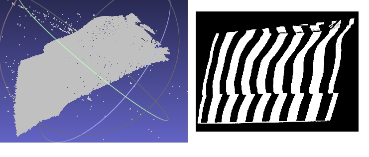
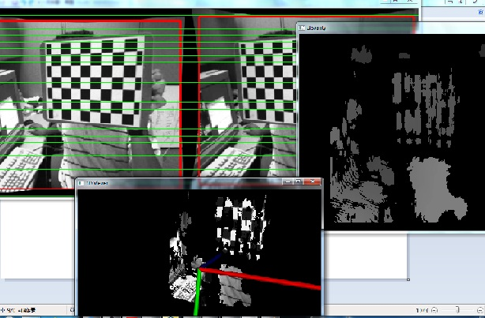

近况
- 2018年：研二一学生获得多个人工智能比赛奖励，如Kaggle人体细胞分类的第11名（4000多来自世界各地队伍），阿里的视频问题比赛第一名（1000多队伍）等。
- 新：拍照式三维扫描系统调式成功，代码全部自己编写，可免费使用该软件的第一版。2012/10/01日下午3:00
我的笔记本电脑包的侧面扫描：  - 多视立体重建系统开发成功,仅限自己使用。2012/9.
- 邀请童晶老师于2012-9-18日上午9：00在B222做一个关于深度相机及其应用的学术报告
- I wrote a simple stereo program for my students to do some tests this week(2012/8/12). stereo_recon.zip ,a demo: 
- my resentation at 杭州师范大学
- 激光三维扫描程序，有兴趣的朋友可以联系我
- http://kesen.realtimerendering.com/
- 常用数学符号的 LaTeX 表示方法
毕业学生
- 杜星悦（2018毕业），苏州移动
- 杨振（2018毕业），上海烽火
- 陈智（2017毕业），苏州某机器人公司
- 薛传宇（2017毕业），苏州移动
- 薛燕娜（2015毕业），山东某职校
- 杨勤（2015毕业），上海
- 刘蕾（2012毕业），南京某保密单位
- 黄晓林（2012本科毕业），华为上海研究所
- 冯树标（2011毕业），北京
- 石坚（2007毕业），AutoDesk
书
Here are some of my favorite technical books。
- Convex Optimization（Lecture Notes） Stephen Boyd & Lieven Vandenberghe，2009
- Pattern Recognition and Machine Learning (Bishop),2006
- Computer Vision: Algorithms and Applications(Richard Szeliski),2011
- Numerical Optimization (Jorge Nocedal and Stephen Wright 2006)
- Interactive Computer Graphics: A Top-Down Approach with Shader-Based OpenGL (6th Edition)
- GPU Germs 3，2009
- 计算机视觉中的数学方法，吴朝福